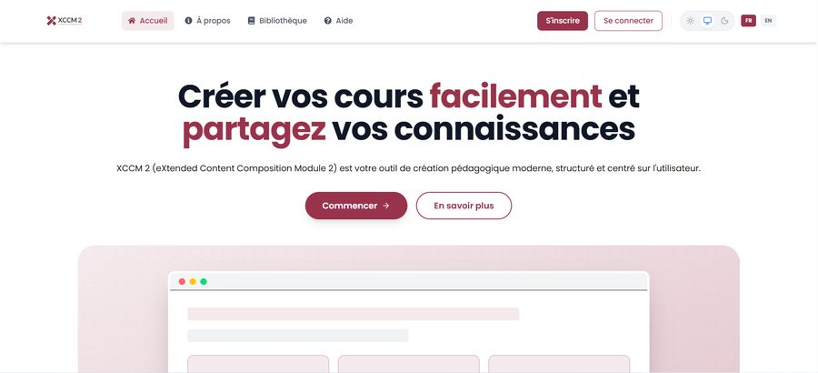
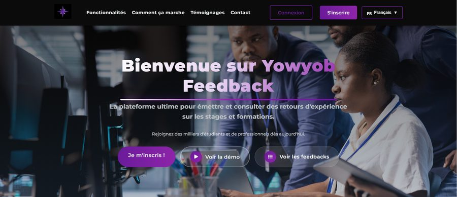
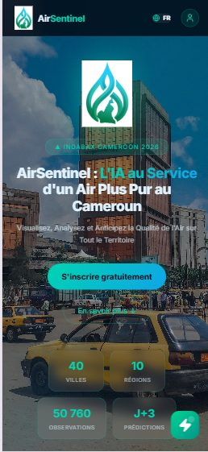

Dans le cadre de ce projet, nous avons conçu et développé XCCM2 eXtended Content Composition Module, une application visant à faciliter la création, l'organisation et la recomposition de contenus pédagogiques à partir de fragments pré-segmentés appelés granules. Cette approche modulaire permet d’améliorer la réutilisabilité des contenus, de favoriser le travail collaboratif et d’optimiser le processus de production des ressources pédagogiques numériques.


Compteur d’eau prépayé intelligent basé sur la technologie LoRaWAN. Ce système intègre une application mobile permettant aux utilisateurs de gérer leur crédit de manière autonome et aux administrateurs de superviser l’ensemble des compteurs déployés. Le prototype vise à démontrer la faisabilité technique et économique d’une telle solution dans le contexte camerounais.

Plateforme de prise en compte des avis et impressions des stagiaires d’une entreprise (basé sur un prototype existant).

AirSentinel représente une avancée majeure pour la santé publique au Cameroun. Grâce à l'intelligence artificielle, nous pouvons désormais anticiper les épisodes de pollution et protéger les populations les plus vulnérables.